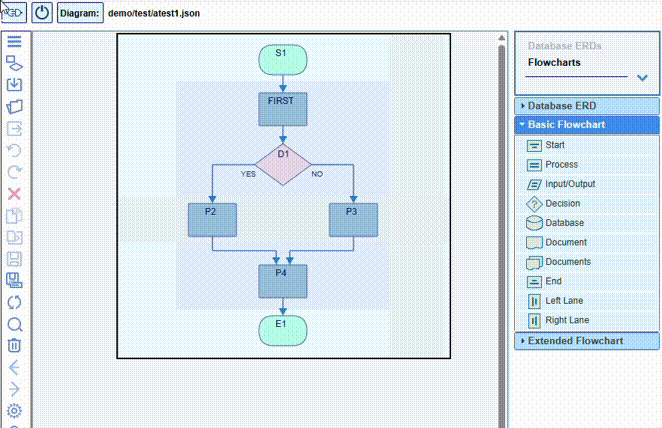

The nodes can be moved, as well as copied and pasted, to different grid cells.
To reassign the link ports,
you can move them to different nodes by mouse-dragging to the appropriate connection
ports.
By enabling the Show association links> option in the Settings->General dialog, you can
assign weak relations between certain nodes.
